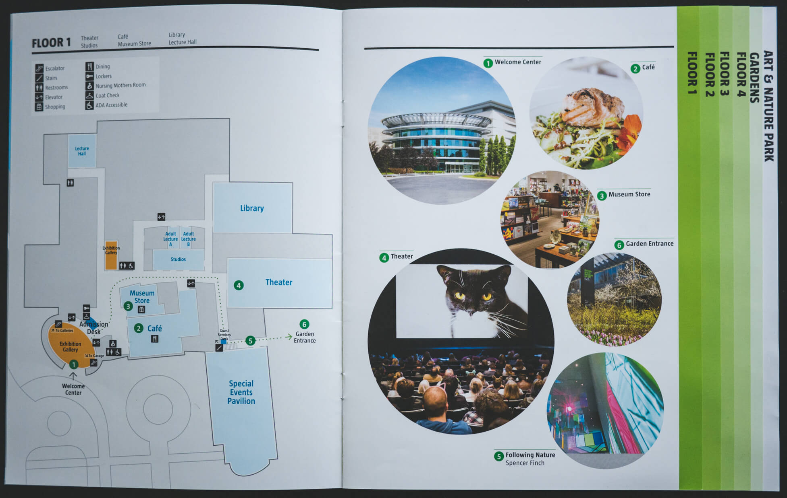
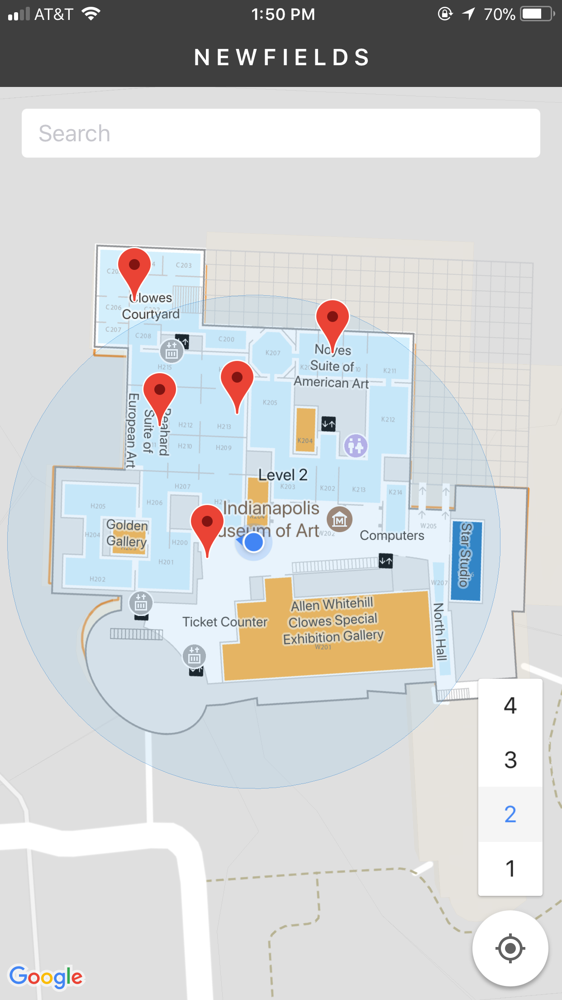

Some places are hard to navigate. Museums with endless corridors and malls that remind a maze can easily make people feel lost. This is the story of how a group of graduate students helped one particular museum design its wayfinding app.
Duration: 9 months
My Role: User Research, Design, Development, User Testing, Publishing
Our client approached us with the objective of creating a better navigating experience within the museum.
Currently, Newfields has a paper map which they distribute to their visitors as they come in. However, it was noticed that even though visitors had the map, they frequently came up to staff members to ask for directions.
Though exit surveys conducted by the customer satisfaction team, they found that people were frequently feeling lost inside the museum and they didn’t think the paper map was much help.
We held initial meetings with the tech team (our client) and they arranged successive meetings with different departments inside the museum. This gave us more context on the challenge. We were thrilled by the opportunity to impact visitors’ experience.
We held weekly meetings with our client throughout project. This modus operandi made sure everyone was in alignment with what was being done and why. Not did it only create a sense of ownership throughout the teams involved, but it also sparked some great ideas as we moved on with the project.
Our client was very interested in learning more about the design thinking process. We adopted this methodology to tackle this project as a way to both solve the wayfinding problem and show them how this process works. Their excitement created a strong and positive client relationship.
Newfields can be split into two parts: the gallery and the gardens. The gallery is indoors and is where all the art pieces are located. The gardens is the outdoors where visitors can explore various landmarks.
Because the indoor and outdoor experiences are somewhat different, we decided to focus this project on indoor navigation. That’s where people needed more help.
Throughout our meetings and inviting a few friends to the museum, we discovered the following:
Through all the floors, there are too many art pieces to look at and it’s impossible to see everything in one day. First-time visitors often don’t know this and end up getting tired on the third floor.
Due to the large amount of walls and lack of reference points, people could seldom find themselves in the map. The only time they knew where they were was when they were close to the escalators.
Paintings, sculptures, and artifacts get put up and taken down frequently in the museum. Once, we were looking for a certain painting that was featured on the map, and it wasn’t even on display!
Through our research and gathered data, we started getting a clearer picture of what we needed to do.
With so many art pieces, most visitors just wander around hoping to find something that’ll catch their eye. Some even ask the museum volunteers for suggestions for what they should see. Our aim is to understand what a visitor likes, and give recommendations based on his/her interests.
The physical map itself is not bad. It contains good information on the museum layout and where different movements of art are located. The problem is in figuring out exactly where one is.
This was a great opportunity for the business to integrate art availability with the visitor experience.
The pieces started coming together and we could vaguely envision what the app was going to be like.
The first page allows members to login or visitors to proceed without logging in. In future versions, logged in members should be able to track what they've seen and get better recommendations based on what they previously liked. This, however, was not implemented in this MVP.
The interests screen will capture the essence of what visitors want to see during their visit.
Based on the interests selected in the onboarding, the museum map would load with suggested art pieces. The user is then able to tap on a particular pin and get more information about that art piece. They could also remove it from the map, in case they didn’t like it.
Around the time we started this project, Newfields had just gone through a brand overhaul. Their website had a completely new look and they also created a style guide for the new brand. We got their style guide and made our high-fidelity prototype in alignment with it.
Based on the interests selected in the onboarding, the museum map would load with suggested art pieces. The user is then able to tap on a particular pin and get more information about that art piece. They could also remove it from the map, in case they didn’t like it.

It's difficult to find and measure what users will like. We talked with the customer service and art curator teams and get their feedback on what visitors ask the most.
Between seeing the pins on the map and getting to the detail info screen, we added a middle ground: the recommendations list. Users can now see all their recommendations in a list form.
Prototyping a user’s location is not something that can be done well with the usual static screens. We knew we needed an adequate way to convey the user’s location. Given my previous experience with Swift and building an iOS app, I said I would make one with the Google Maps SDK.
I created a pretty decent prototype. The onboarding worked as it should, and pins were interactable. We took it for a test drive.
I couldn’t believe how inaccurate the GPS tracking was inside the museum galleries. Sometimes, all it was really sure of was that I was somewhere in the museum.
Fortunately for us, another team member knew Java and had proximity beacons that could be used to vaguely simulate location changes. Instead of having an live map, we would have images of the map and the user’s location that would change when users passed through strategically placed beacons.
With our prototype ready, we got some folks to test it out. Most of them thought it was very user-friendly and really liked it that the app would notify them when they were close to a pin.
Users were not sure if pins were directly related to the art pieces they liked on the Interests page. This caused some confusion as to what the pins represent.
The pins seem too generic and give no clue as to which art piece they represent. Users mentioned how they had to tap on all the pins to see what they are.
This was an exciting project where we got a great experience with working with a client. Having a good relationship with the Newfields teams really made our work easier and our design better.
Looking back, I think we would have benefitted from the use of personas. We had an ideal target audience in mind, but in many discussions, we ended up talking about other demographics and their needs.